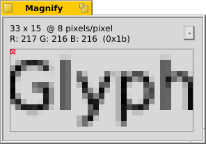
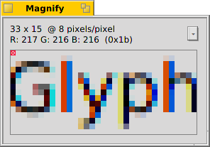

The Appearance preferences lets you change some aspects of Haiku's visuals.
Colors

In the first tab, Colors, you can change the colors of different parts of the user interface. The color well accepts drag&drops from other programs, letting you drag colors over from e.g. WonderBrush, Icon-O-Matic or the Backgrounds panel.
Antialiasing

The second tab, Antialiasing, provides different settings for how things are rendered on screen.
An activated Glyph hinting aligns all letters in such a way that their vertical and horizontal edges rest exactly between two pixels. The result is a perfect contrast, especially when dealing with black on white. Text appears crisper.
See the difference of the two settings with these magnified screenshots:

Another technique to improve rendering is Antialiasing, which supports all vector graphics as well as text. It smoothes lines by changing the color of certain pixels. There are two methods for that:
Greyscale changes the intensity of pixels at the edge. LCD subpixel does an even better job, especially with (high resolution) LCD monitors. Instead of the intensity of a pixel, it changes its color which moves an edge by a fraction of a pixel, because LCD displays produce every pixel with a red, green and blue component.
Again, the two different methods with magnified screenshots:
Subpixel based antialiasing adds a slight colored shine to objects. Something not everyone tolerates. In Haiku you can mix the two antialiasing methods and find the right setting for you by using a slider.
Note: The subpixel based antialiasing in combination with the glyph hinting is subject of a software patent and is therefore not available by default. Depending on where in the world you live, you may get an unlocked version. Sorry about that. Talk with your representative.
| Defaults | resets everything to default values. | |
| Revert | brings back the settings that were active when you started the Appearance preferences. |